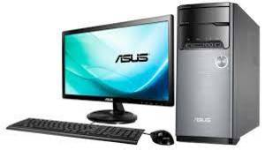
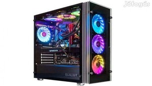

Egyidejüleg egyetlen felhasználó kiszolgálására alkalmas számítógép. Vállalati vagy otthoni környezetben is használható, használati céljainak megfelelően különféle periféirák kezelésére képe. Elfogadható árszintje miatt a mindennapi életben leginkább elterjedt számítógép-kategória. Nem megfelelően összeállított asztali gépek esetén ergonómiai problémák léphetnek fel, úgy mint szemszárazság, fejfájás, csukló- és kézfejbántalmak. Például, általában az asztalra helyezett billentyűzet és egér túl magasan helyezkedik el, vagy a nem megfelelően beállított CRT monitor túl alacsony képfrissítési ráta mellett fejfájást idézhet elő, és a használatot is megnehezíti a villódzó képernyő miatt.

